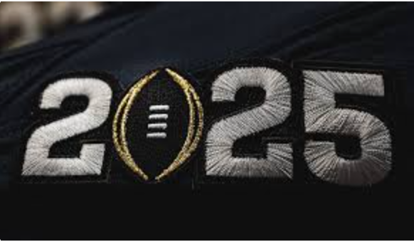

Elites of College Football is a website designed to analyze the best players of the upcoming college football season. Throughout the page you will find the six of the premier players, along with important data points, our two favorite picks for the Heisman Trophy, and a form where you are able to submit your favorite players to be added to the Elites of College Football.
